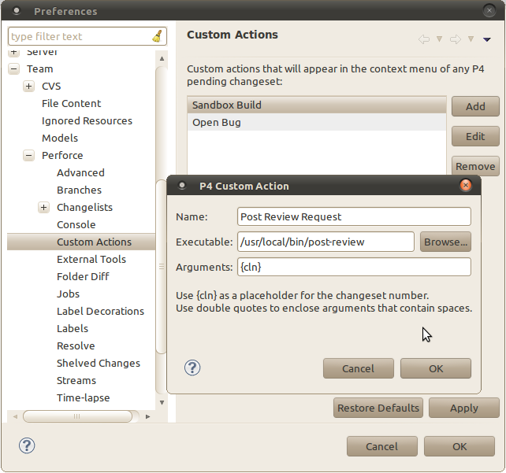
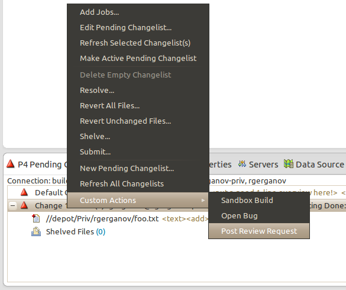
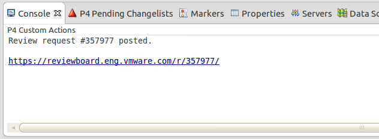

p4actions is Eclipse plug-in that adds custom actions to pending Perforce changelists. You can execute any script or command from the context menu of the changelist without leaving the IDE. The output of the executed action is displayed in the Console view.
http://xakcop.com/p4actions/site (should work for all versions of Eclipse)TODO



Feel free to send me any questions, suggestions or feedback at my email address: rgerganov@gmail.com